Work / Case study
Everyday Objects
A hitman with no weapons. You learn a target's routine, then use the city around him to make his death look like an accident.
- Role
- Solo designer and developer
- Platform
- Mobile web, landscape
- Built with
- Unity, Claude, Blender
- Year
- 2026
Built for replayability
I wanted a game people would play again, so I started by listing the kinds of games that make that happen:
- Puzzle games with several approaches, where each approach is rewarded.
- A story told inside a simulation that runs over in-game hours and days.
- Abstract endless games.
The second one interested me most: a story set inside a simulated place like an office. Around the same time I wrote down a second idea, a professional hitman who can only use everyday objects and traps. I put that one aside.
QA Tester: the game I dropped
The first version was set in an office. You play a junior QA tester handling office politics while testing janky games. A bad build became part of the story: a bug for the player to find and report.
Each day you play the builds you're assigned, flag bugs, label each flag and decide whether the build ships. Coworkers each have a trust meter, and enough trust unlocks their secrets. Your first performance review is at the end of day five, and two bad reviews in a row get you fired.
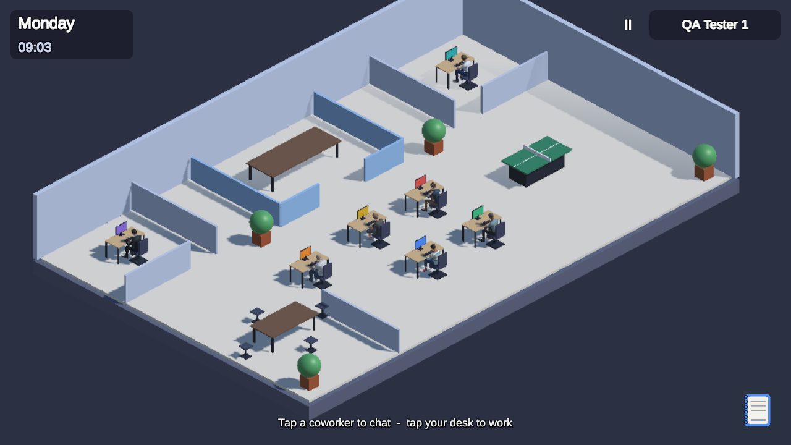
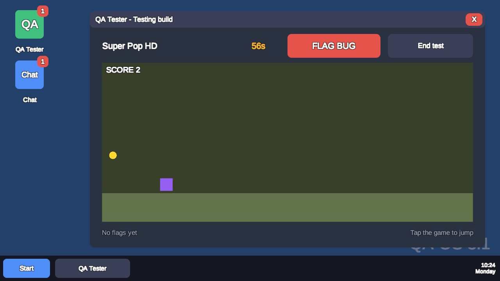
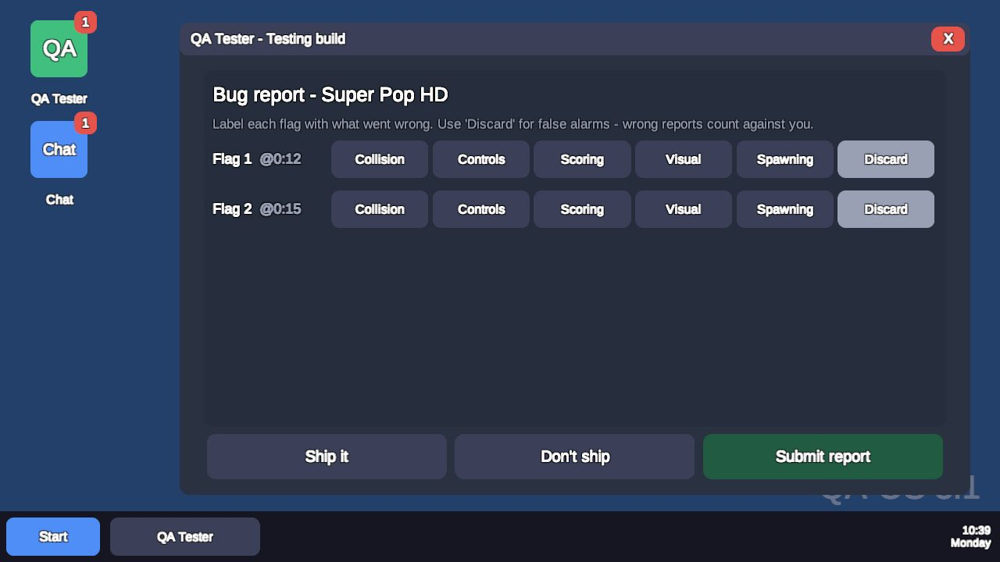
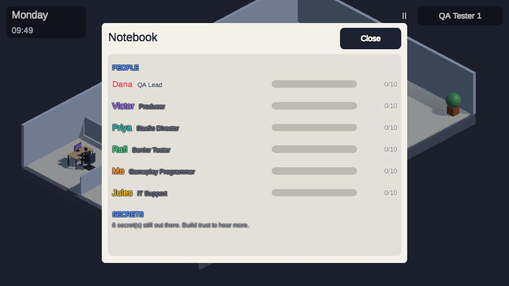
What playing it showed
- Conversations repeated too often.
- The player needed something to do besides talking and testing, so I designed a ping-pong minigame where winning could raise or lower a coworker's trust.
- The workday was too long in real time, and the in-game OS felt like a menu instead of an operating system.
- Secrets sat beside the core loop instead of driving it. My fix was a coworker handing you a huge task in a new genre: without dirt on them by the review, you're fired; with it, they are.
Then I asked whether it was fun. It wasn't, so I dropped it.
An everyday hitman
I went back to the idea I'd set aside: an ordinary hitman with no gun, who has to sabotage or rig things to eliminate a target. It kept the isometric view and tap controls from the office game.
The main design goal was routines. Every NPC follows a schedule. Contracts arrive by email. You stalk the target, learn their day, and find a way to kill them in the situations that day creates.
The first new mechanic was following: tap the target, the camera frames both of you, and sliding toward or away changes the distance.
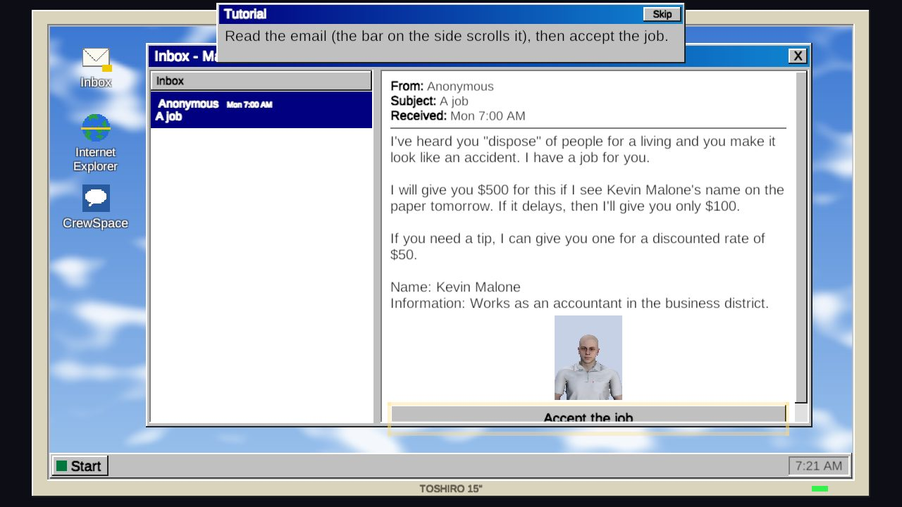
Kevin's day, and five ways it ends
Kevin Malone is an accountant in the business district. I wrote his whole day, from waking at 08:45 to passing out on his couch at 22:30, and numbered every moment where he could be killed. Those became the five elimination options. I drew maps of the business district and the suburbs to plan his routes.
- 01Poisoned breakfastThe $50 tip: Kevin drinks with his breakfast before work.
- 02Slippery bathroom floorA wet floor at the right moment.
- 03Break-room coffee machineAt work in Schrute Tower, behind a key card.
- 04Lunch at the barA bar job lets you serve Kevin his own food.
- 05His house at nightNeeds a key, or an invitation from Kevin.
A city that works as a weapon
With the target written, I designed the systems around him.
Restricted places
Schrute Tower needs a key card, with three ways in: a suit from the mall, a card someone forgets at the café every day, or a job ad in the newspaper.
Information
Payphones, the newspaper, the internet, loitering near the subway, paid tips, stalking, and CrewSpace, a social network of short posts called Pings.
Notebook
Touching information records it. Some routine entries highlight into ideas for an elimination.
Shops
Pick items up and pay at the cashier, or the police are called. Food, newspapers and poison at the supermarket; clothes, coffee and a bar at the mall.
Blending in
Reflex vision shows places to blend in, a slow-motion beat before being called out, and infamy that changes with clothes and haircut.
Needs
Hunger and sleep shape the day. Skip food and you pass out for four hours. Time skips with a cassette fast-forward effect.
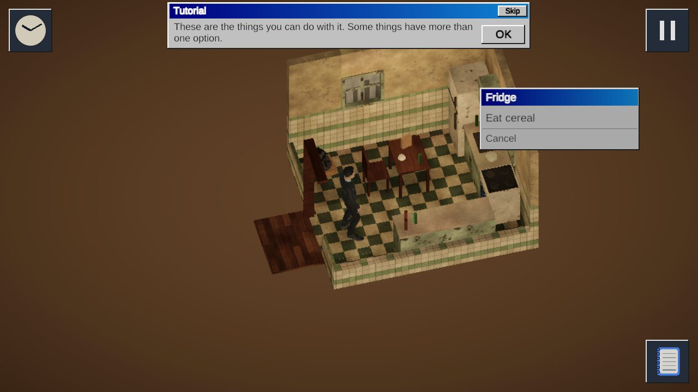
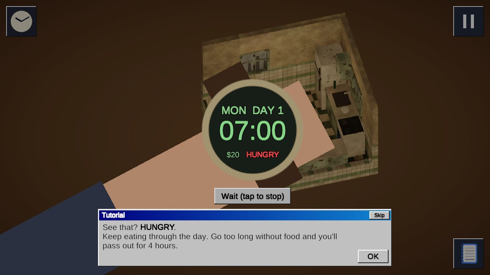
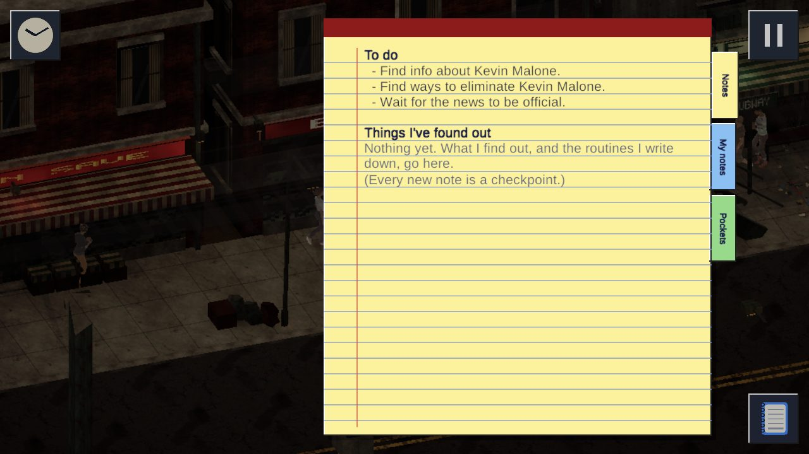
Poison, collapse, payphone, paper
Once Kevin is dead, the job isn't done until it's news. Report it anonymously from a payphone and the story runs in tomorrow's paper. Don't, and it takes four days. Then the client pays.
A scripted first morning
Wake in the bedroom and tap to move. Walk to the kitchen. Check hunger on the watch. Open the fridge to learn context menus. Log in to the computer, accept the job, log off and leave. Outside, one screen says the city is open to you and there are no weapons.
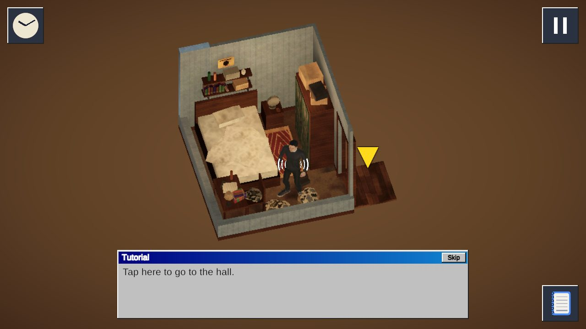
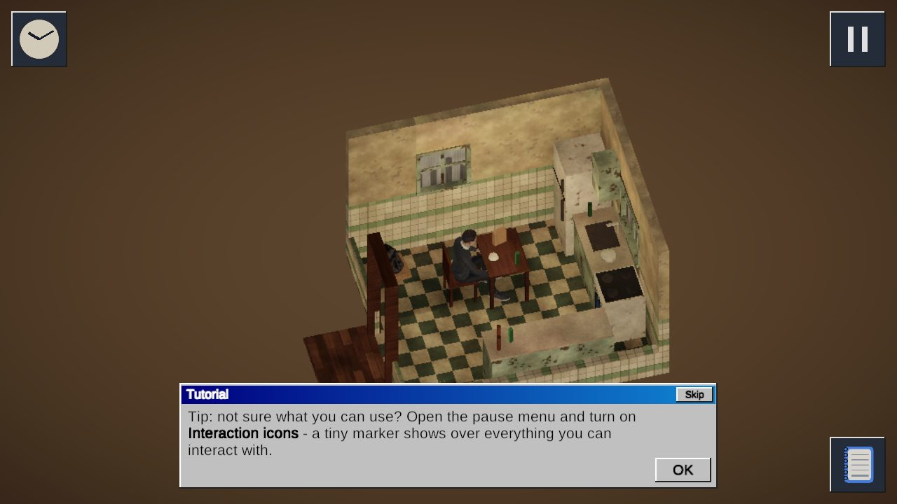
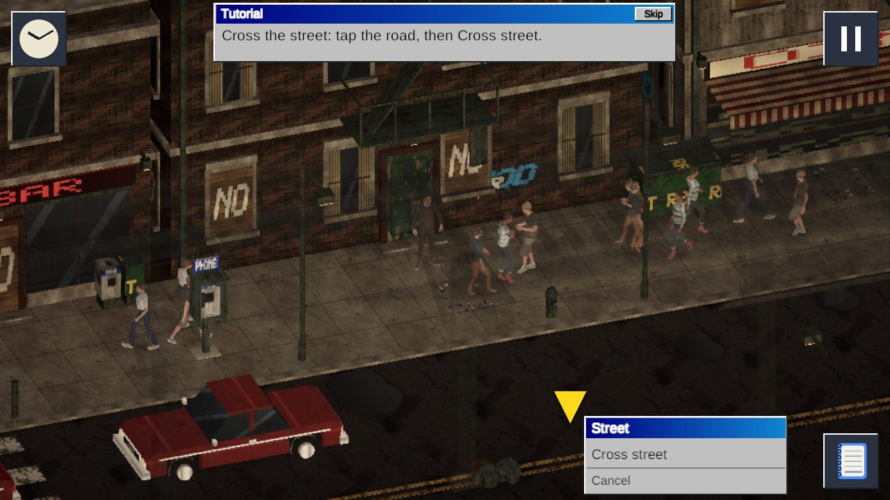
What changed after playing it
- The bar job became a daily drink-serving minigame. It gives a steady income and a way to serve Kevin his own food.
- Time skips now simulate the whole world instead of only moving the clock.
- The subway exit moved away from Schrute Tower, so Kevin walks part of the way and can be followed.
- Kevin moved to a booth at the bar, and stray stools were removed so routes read clearly.
- Cross street appears only when tapping a street; tapping anywhere else closes the menu and walks there.
- Camera transitions became instant, and interiors like Schrute Tower zoom in.
Noir, low-poly, blue-grey
PS1-style low-poly models with detailed textures, mid-contrast lighting and a blue filter. Shackleton Ave is run down, with graffiti and an elevated subway. The suburbs have greenery on small plots. The business district has high-rises and taxis.
References: Deus Ex for the immersive-sim feel, Beat Cop for a full day of routines, The Sims 2 on PSP for how its story connects characters, and GTA III for the grey, metallic look.
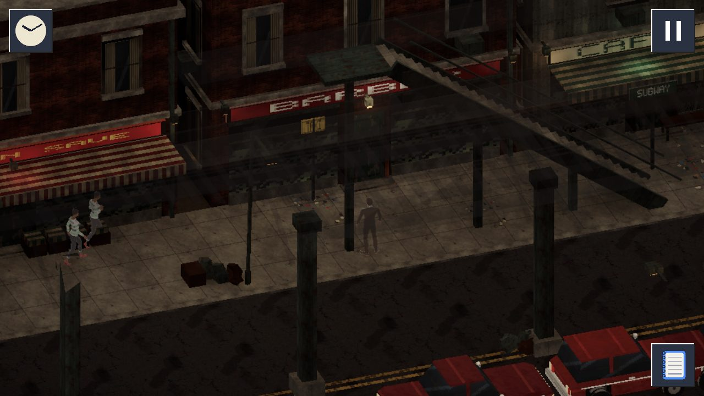
How I used AI
I built the game with Claude through Unity MCP and made assets with Blender MCP. My design document held everything I designed myself: the story, mechanics, routines, references and level layouts. Claude worked from that document. AI wrote the dialogue and in-game text. Nothing is generated while the game runs.
Next: discoverability
I tested how the game feels, whether players get enough context, and whether actions are readable. The main thing left to fix is discoverability: players need clearer ways to see which objects they can use. An optional interaction-icons setting is the first step.
For a soft launch I would watch session length, time spent in each area, and how often players tap, since repeated tapping is a sign of confusion.